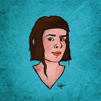
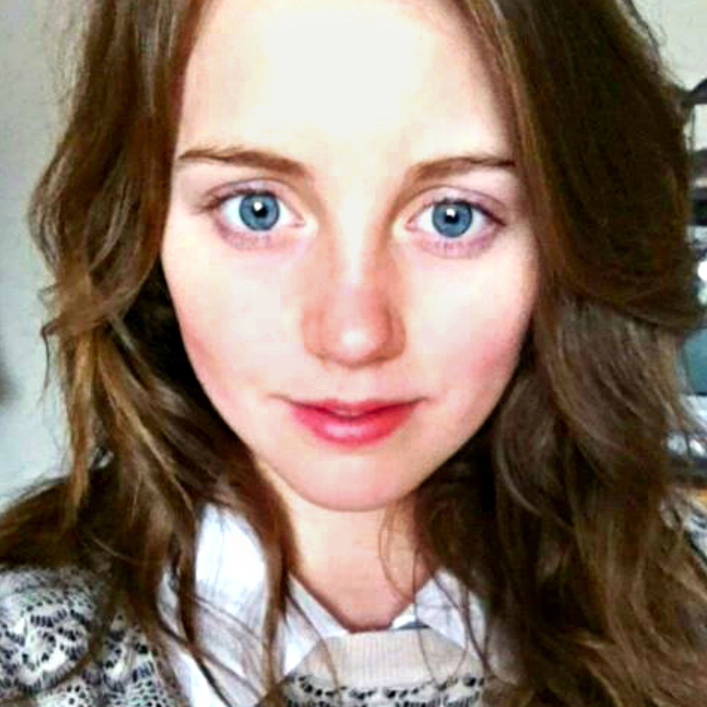
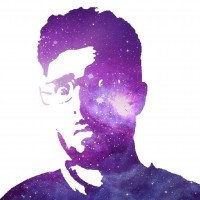

Emoti
Visualising Emotions
Watch the Video
Visualising Emotions
Watch the Video
Twitter API- Pulls in live tweets from Twitter Widgets based on keywords from a multilingual database tailored to phrases and slang terms used on the network.
HTML/CSS/JavaScript- This data is used to animate different coloured divs (blocks) which are assigned to each emotion type on a webpage, creating a visualisation of the various emotions felt.
Audio- Conflicting audio tracks are assigned to each emotion and change volume intensity to reflect the data.
Raspberry Pi/HDMIPi- The webpage runs through a Raspberry Pi and displays on a HDMIPi.
Laser Cutting- Was used to create a rippling sculpture to represent the very same waves of emotion and conversation.
New post: Emoti - Visualising our Emotions. A project from some of our Creative Technologists https://t.co/xF0NbIQycf pic.twitter.com/oVO5QiYUU9
— Raspberry Pi (@Raspberry_Pi) May 27, 2015Emoti was born from the minds of both artistic and technical thinkers. It was created with the mindset that 'purpose' did not have to be a driving force; that technology can be used for purposes as artistic and visual as painting or film, with no use other than to simply be unique. This mindset allowed for complete creative freedom for both design and technology to merge together to form a new kind of art.
If getting creative and having fun with technology is something that you're interested in then we've put together some useful links for you to check out!
Useful Links |
|
| Art Hackathon - The Hackathon where Emoti was born |
www.arthackathon.co.uk |
| Raspberry Pi Jams - Here you can solder, play Minecraft, code and more! (Emoti runs on a Raspberry Pi) |
www.raspberrypi.org/jam |
| London Hackspace - Join a Hackspace to create your own projects and meet other makers! |
london.hackspace.org.uk |
| Fab Labs - A place to play, to create, to learn, to mentor, to invent! |
www.fabfoundation.org/fab-labs |


